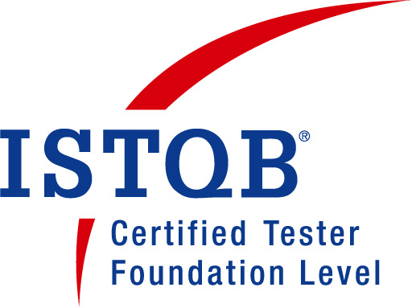

|
Sumeet Kumar
Contact: +91-9845590320, sumeetkumar05@yahoo.co.in
Senior Manager, Standard Chartered Bank
GUI and Server side automation
|
|

 |
JOB OBJECTIVE
Seeking senior assignments in Quality Assurance and Automation Testing preferably in IT industry
PROFILE SUMMARY
- A skilled professional with 11 years of experience in Automation testing (Java, Selenium, Devops and UFT)
- Extensive experience in JAVA, Spring, Selenium, QTP, Cucumber, Maven, Unix, Junit/testNG, Jenkins, Devops and GIT
- Worked multiple times in framework implementation for standalone, server side and web applications
- ISTQB and NCFM- Financial Markets certified
- In-depth knowledge in scripting language VBscript, shell script and Javascript
- Worked on various financial domains like Capital Market, BFS. Vast experience in FIX protocol,equity and FX domain
- Quite good exposure in working in all the phases of Automation Testing Life Cycle, STLC and Agile Methodology
- Skilled in SQL, web development language(HTML, CSS, JavaScript, BootStrap, Jquery)
- Remarkable understanding in solving complex coded scripts, outlining the automated driven modules etc
- Possesses good technical, analytical, interpersonal and communication skills
ORGANIZATIONAL EXPERIENCE
May'19 – Till Date: Standard Chartered Bank as Senior Test Manager
Projects handled
Title: S2BX
Role: Functional Automation lead and Tester
Tools: JAVA, Cucumber BDD, Maven, GIT, JIRA, UNIX, UFT, Jenkins, Docker
Responsibilities
- Framework enhancement and maintenance/optimization
- Implemented reporting pipeline through Jenkins, Orchestrator
- Maintain automation tracking sheet and discuss progress with stakeholders
- Execution and analysis of regression and smoke scripts on various builds as per requirement
- Involved in Continuous Integration activities
- Leads QA automation release cycle
Jan'16 – May'19: Citicorp Services India Pvt Limited as Manager
Projects handled
Title: CFORE, ARBOL, CCM
Role: Functional Automation Tester
Tools: JAVA, Selenium, Cucumber BDD, Maven, GIT, TDM, JIRA, UNIX, UFT, QC, Teamcity and Jenkins
Responsibilities
- Preparing Test plans, estimation and coverage metrics
- Framework creation/enhancement/optimization
- Maintain automation tracking sheet and discuss progress with stakeholders
- Follow Agile Methodology : Sprint for release development
- Involved in Continuous Integration activities
- Involved in Recruitment process
Sep'15 – Dec'15: IGATE Global Solutions as Project Lead
Projects handled
Title: GE Treasury
Role: Functional Automation Tester
Tools: UFT & QC
Responsibilities
- Framework maintenance
- Reporting of task progress to stakeholders
Mar'14 – Sep'15: L&T Infotech as Senior Test Engineer
Projects handled
Title: CFORE, ARBOL, CCM
Role: Functional Automation Tester
Tools: QTP, Selenium, Cucumber BDD, Maven, TDM, UNIX, Fix Messaging, QC & SQL
Responsibilities
- Preparing Test plans, estimation and coverage metrics
- Framework creation/enhancement/optimization
- Maintain automation tracking sheet and discuss progress with stakeholders
- Follow Agile Methodology : Sprint for release development
- Involved in Continuous Integration activities
- Involved in Recruitment process
- Creation, execution and analysis of regression and smoke scripts on various builds as per requirement
Nov'11 – Feb'14: SunGard Global Services as Test Engineer
Projects handled
Title: PTA, CAD
Role: Functional Automation Tester
Tools: QTP, Selenium, Cucumber BDD, Maven, TDM, UNIX, QC & SQL, TFS, TestTrack
Responsibilities
- Preparing Test plans, estimation and coverage metrics
- Framework creation/enhancement/optimization
- Maintain automation tracking sheet and discuss progress with stakeholders
- Follow Agile Methodology : Sprint for release development
- Involved in Continuous Integration activities
- Creation, execution and analysis of regression and smoke scripts on various builds as per requirement
Dec'09 – Nov'11: Tata Consultancy Services as System Engineer
Projects handled
Title: Intel PC Remote Display, XM3-Image Processing, RISCO
Role: Functional Automation Tester
Tools: QTP, UNIX, QC, VC++, MS-Visio, Load Runner
Responsibilities
- Requirement gathering from Business unit team
- Framework creation/enhancement/optimization
- Maintain automation tracking sheet and discuss progress with stakeholders
- Creation, execution and analysis of regression and smoke scripts on various builds as per requirement
TECHNICAL SKILLS
| Technical Primary Tool: | Selenium, Java, QTP, Jenkins, Maven, GIT, Unix, Quality Center, JIRA |
| Technical Primary Language: | Java, VBScript, Shell Script, SQL |
| Testing Methodology: | Agile Methodology(Scrum& Kanban), Automation Test lifecycle, Devops |
| Secondary Tools: | Python |
| Test Management Tools1: | Quality Center, JIRA, Test Manager, Test Track |
| Databases: | ORACLE 8, KDB, SQL Server 2008 |
CERTIFICATION
- ISTQB- Foundation Level
- NCFM- Financial Markets
EDUCATION
- B.Tech. (Computer Science) from Silicon Institute of Technology, Bhubaneswar, Biju Patnaik University of Technology in 2009 with 7.44 CGPA
- 12th from DAV Jawahar Vidya Mandir, Ranchi, CBSE in 2005 with 74.8%
- 10th from DAV Jawahar Vidya Mandir, Ranchi, CBSE in 2003 with 79.6%
OTHER ACCOLADE
- Bagged winners in Carom Competition organized at Silicon Institute of Technology, Bhubaneswar in 2007-2008 respectively
- Bagged winners in Badminton tournament at SUNGARD, CITI
- Received accolades and excellence award from TCS, L&T Infotech and CITI for excellent performance in the project activities
TRAINING
- Actively attended Corporate Selenium trainings and courses from SQTL institute
- Actively attended Python, Machine Learning, Agile Methodology, Engineering excellence, PERL trainings and lots more conducted by organization
VOLUNTARY ASSIGNMENT
- Conducted Blood Donation Camps in Bhubaneswar during college in 2007 and served as part of Organizing Committee of Cricket tournament during college in 2008-2009
PERSONAL DETAILS
| Date of Birth: | 5th October 1987 |
| Address: | Bangalore |
| Languages Known: | English, Hindi |